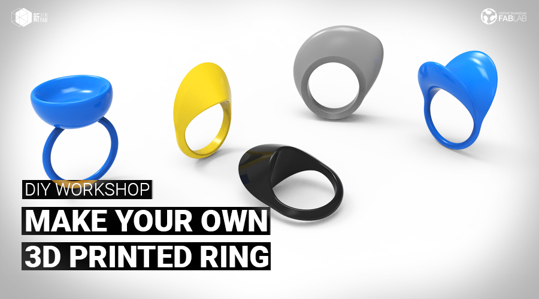

WORKSHOP
DIY WORKSHOP: MAKE YOUR 3D PRINTED RING | 3D打印您的首饰 - *ENGLISH ONLY*

When:Tuesday, October 3, from 10am to 5pm
Where: Xinfab - Kangding East Rd, Lane 45, Building no.5, Room 102, Jing'an District
Price: 400 RMB
Join jewelry designer and digital fabrication enthusiast Pamela to learn how to create a 3D model of a ring and then get to print it yourself.
You will first get an overall and basic view of what Rhinoceros 3D software is, and with this basic knowledge, Pamela will show you how to build your own 3D ring, based on her design.
No previous knowledge is needed, but if you already are a bit more skilled you can modify Pamela's design to your taste or even create your very own design.
At the end of the workshop, you will bring home a ring or two 3d printed rings, depending on the workshop speed and number of participants. You will know how to use the basic tools and navigate through Rhinoceros 3D, how to use Cura and set up the 3D printers at Xinfab for your future 3D prints.
Things you should bring:
// Your laptop and charger
// Mouse (you’ll have a hard time without one)
// Install Rhinoceros 3d in your laptop (Windows recommended - Trial version is OK) (https://www.rhino3d.com/)
// Please install Cura (version 15.04) too! (download here: https://ultimaker.com/en/products/cura-software/list )
// Your passion, curiosity, and questions


WORKSHOP SCHEDULE
// PART 1 - 3D MODELING
_Intro to Rhinoceros 3D
_Software applications
_Overall view of Rhinoceros interface and how to navigate through the software
_Learn the basic modeling tools to create a solid model and a 2D dimensional model
_Practice the commands to build your own ring!
// LUNCH BREAK
// PART 2 - 3D PRINT YOUR RING
_Short intro to digital fabrication
_Prepare your model for Cura
_Overview of Cura Software and how to slice 3D models
_Learn how to operate the 3D printer
_Test and print your own ring model! (Printing the model should take 10-15 minutes so everyone has a chance to print out their models)
_Troubleshoot and solve issues that come up during the printing process
_(Optional) Clean the ring with sand paper to remove any leftover and smooth the edges.
_Take home your first ring designed and printed by you!
///////////////////////////////////
HOW TO SIGN UP
// ALIPAY (400 RMB)
Transfer the workshop fee to pay@xinfab.com (please indicate your phone number on the payment details so we can contact you!)
// CASH (400 RMB)
come by our lab during our opening hours to book your spot. (You can also just come when the workshop starts, but we cannot guarantee there will be a spot left for you.)
// WECHAT (410 RMB - Wechat charges us a fee)
Enter our shop from your phone via this link and proceed to payment with Wechat Wallet
Questions? Send an email to info@xinfab.com.
///////////////////////////////////
ABOUT THE TEACHER

Pamela Martello is a Mexican jewelry designer who has been creating original and stylish designs in Shanghai for the past 4 years. Jewelry is Pamela's true love, but she is always experimenting in other fields related to design where she finds inspiration for her creations – digital fabrication is no exception. For Pamela, travelling, exploring, and living in different places offers a constant stream of stimulus for new ideas (plus a little fantasy too).